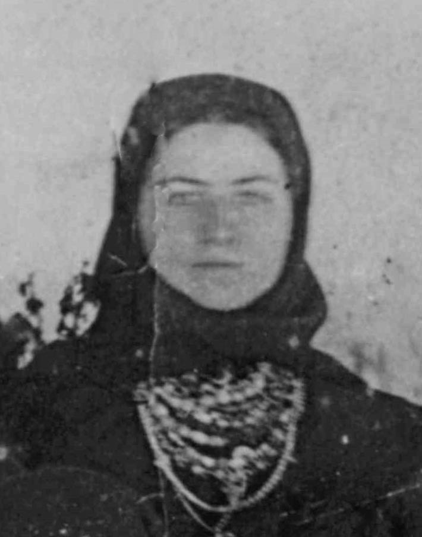

Сербинова (Донева) Евдокия Федосеевна
Евдокия.
Родилась: 29.10.1910, с. Зеленое (с. Зеленовка)
Умерла: ?
Место жительства: с. Зеленое (с. Зеленовка)
Запись о рождении: https://www.familysearch.org/ark:/61903/3:1:3Q9M-CSSC-8QZP-C?i=439&cat=1043584
Запись о браке: https://www.familysearch.org/ark:/61903/3:1:3Q9M-CS9J-S146?i=1191&cat=1405206
Муж: Сербинов Василий Иванович
 Семья Сербинова Ивана Федоровича 1873 г.р.: около 1929, с. Зеленое (с. Зеленовка). Рукой Сербинова Александра Федоровича на обороте: Семья Сербинова Ивана Федоровича 1873 г.р.: около 1929, с. Зеленое (с. Зеленовка). Рукой Сербинова Александра Федоровича на обороте:1. Иван Федорович (дедушка) 1870-1932 2. Василий Иванович (дядя) 3. Степанида Ивановна (бабушка) 1870-1932 3. Евдокия (тетя жена В.И.) 5. Мама 1895-1975 29/12/75 6. Надежда Федоровна (сестра) 7. Отец (1895-1965) 28/10/65. |